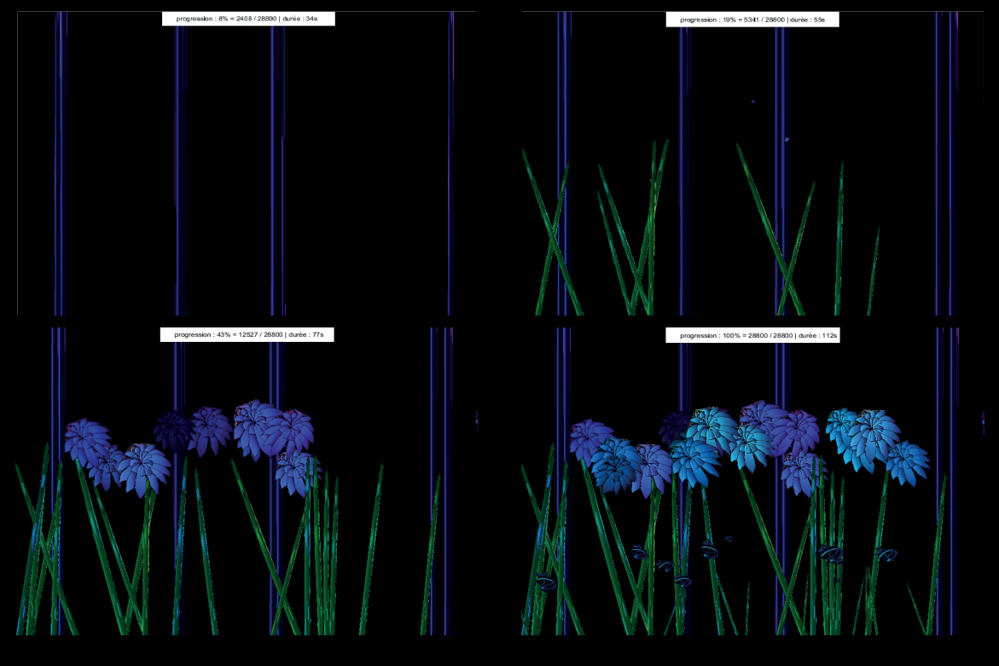

Le numérique et la nature sont par définition incompatibles, tel l'artificiel et le naturel. Et pourtant la nature est écrite en langage mathématique. Ce programme animé réinterprète, à ses origines, ce que la vie était. Un oxymore qui prend tout son sens dans son concept.
Les formes et les éléments necessaire à la conception ont été dessiné à la main. Puis le tout a été numérisé et modifié numériquement. Processing est un logiciel qui a permis, par le code, d'étirer les formes, les faires changer de couleurs, de les rétrécir et les faire apparaître à un point donné.